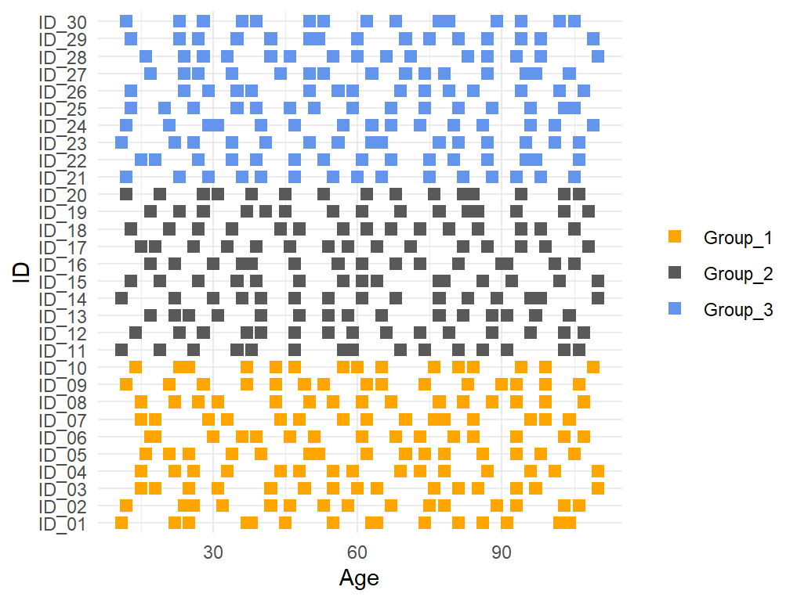
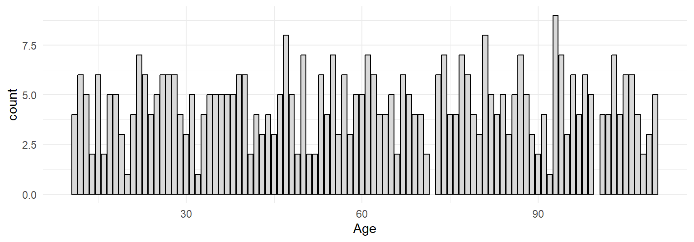
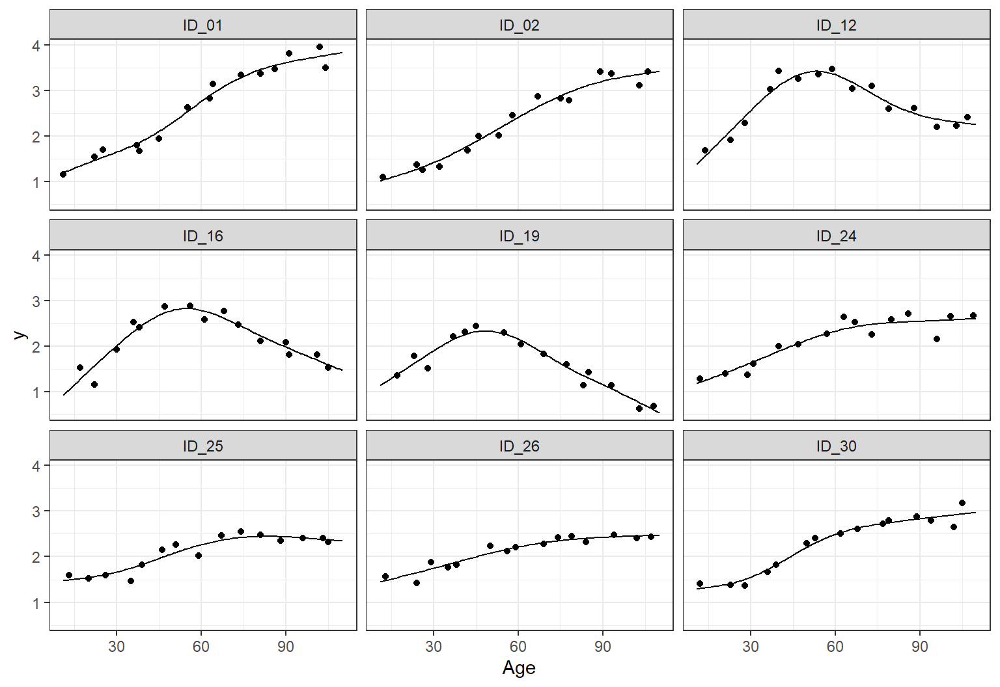
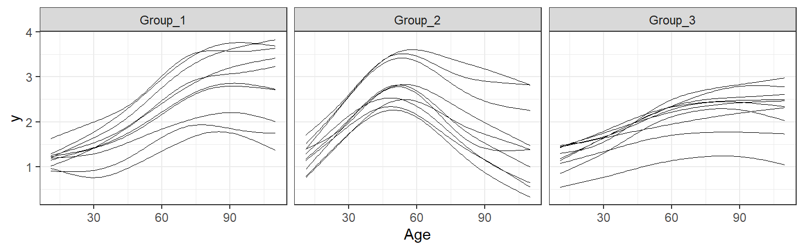
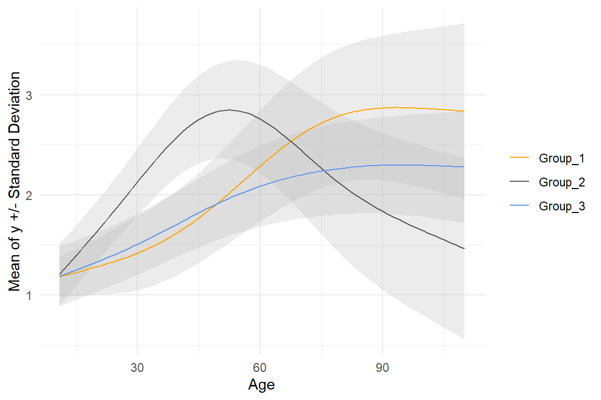
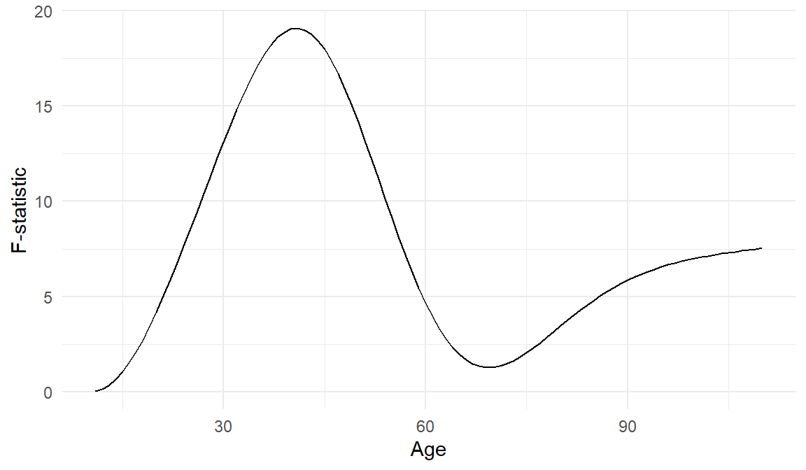
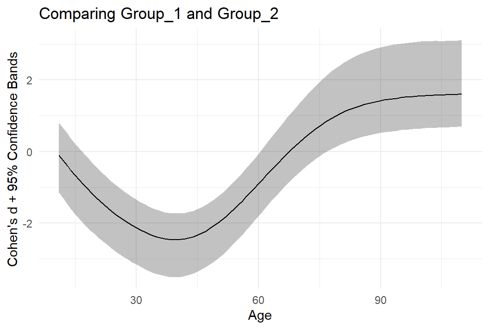
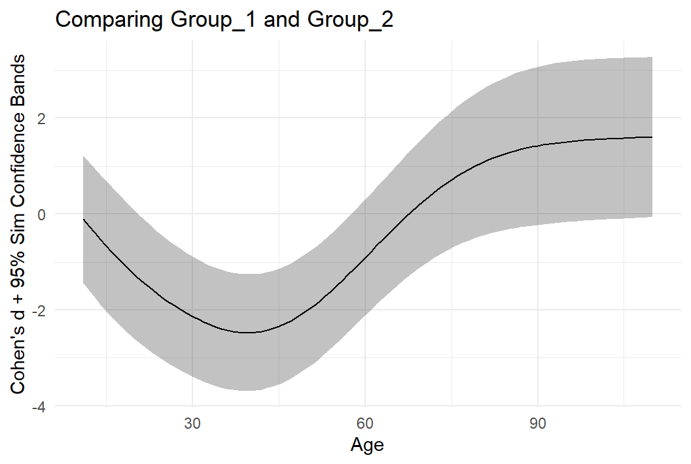

Session 26: Intro to Functional Data Analysis (FDA)
Functional Data Analysis (FDA) is a statistical approach for analyzing data that vary continuously over a domain such as time, space, or experimental conditions. In early development research (such as much of the work done at Marcus), examples include age related growth trajectories, cognitive skill progressions, or changes in brain activity patterns. Instead of analyzing measurements at each age separately, FDA considers the whole developmental curve, capturing individual trajectories and age-related associations between variables of interest. This perspective is especially useful for studying early development, where understanding how children’s abilities evolve across age rather than just their status at a single time point is critical.
Rather than attempting to provide a comprehensive overview of everything that can be done within the framework of FDA, we will focus on a set of intuitive examples that build on many of the statistical methods already covered in this training.
We begin by introducing the data. Click the download button below to obtain a copy in .csv format.
- We have a lot to learn today, so let’s warm up with a very simple exercise. Read the data into R and name the resulting object
fda_data.
If we inspect these data, we see four variables: ID, indicating the participant identifier; Group, describing group membership; y, which we will use as the outcome variable in our analysis, and Age, giving each participant’s age at the time of assessment.
In FDA, it is important early on to assess how densely the data are sampled across the x variable, in our case age. This assessment helps guide the choice of methods in the analysis pipeline. One simple approach is to plot the ages at which each participant was assessed, allowing us to evaluate whether age is well covered overall.
- Recreate the code to produce the plot below. How many observations per participant and group are there in the
fda_data?

Another useful way to visualize these data is to examine how many observations are available at each age. To do this, we can create a plot like the one below with a bar for each age at which observations were made. Note that we are not binning the data; each bar corresponds to a specific observed age.
- Not much to say here other than recreate the plot please.

Taken together, these two plots indicate that the data are reasonably densely sampled. They also show that, although each participant is assessed multiple times, the number of observations at a given age varies substantially. This is a common feature of longitudinal data like the sort you fill find at Marcus, as measurements for different individuals are often taken at slightly different ages. The result is a mosaic of observations across age, which makes it difficult to analyze development as a truly continuous process. To address this, we need a method that transforms discrete measurements into smooth curves approximating the underlying individual trajectories. Several approaches are available, but here we will rely on a statistical technique you are already familiar with, namely generalized additive models, or GAMs.
Constructing smooth curves also reduces random measurement noise, enables calculations such as rate of change, and provides clearer visualizations of developmental patterns.
Now we will fit a GAM to the data for each participant. We begin by splitting the dataset by ID using the group_split() function, which produces a list with one element per participant. We also pull the ID names from fda_data and add them to the model list object.
- Complete the code below so that runs correctly. Set the number of basis functions to
k = 6. Inspect thegam_modelsobject and make sure you understand the structure and that each element has been given a name corresponding to the IDs in the original data.
library(mgcv)
gam_models <- fda_data |>
group_split(___) |>
map(\(i) gam(y ~ _____, data = i, method = _____))
names(gam_models) <- fda_data |>
group_by(___) |>
group_keys() |>
pull(ID)The next step is to use the fitted GAMs to generate model based predictions for each participant. This frees us from the specific ages at which observations were collected and allows us to define the x variable directly by choosing a grid of ages of interest. The resulting age grid and corresponding predicted y values form the functional data that will be used in downstream analyses.
- In the code below, fill in the blanks to create a sequence of 100 age values evenly spaced between the youngest and oldest ages in the original data. The rest of the code we have provided generates the predictions, creates a tibble with the predictions and age sequence, and uses
left_join()to add theGroupinformation to the final output. Use thefunctional_dataobject to generate a plots like the first two plots in this session to confirm that all participants now have data for all ages innew_ages.
new_ages <- seq(min(_____),
max(_____),
length.out = _____)
functional_data <- gam_models |>
map(\(j) tibble(y = as.vector(predict(j, newdata = tibble(Age = new_ages))),
Age = new_ages)
) |>
list_rbind(names_to = "ID") |>
left_join(fda_data |> distinct(ID, Group))After fitting the GAMs and generating predictions, it is useful to inspect how the predicted trajectories align with the original data points. Rather than plotting all participants, we will randomly select 9 IDs and visualize the data for these individuals.
- Complete the code chunk so that the output matches the plot below (although the specific IDs plotted may differ). Inspect the fitted curves. Did the GAMs do a good job generating predictions?
IDs <- sample(size = 9,
x = functional_data |>
distinct(ID) |>
pull(ID))
functional_data |>
filter(ID %in% _____) |>
ggplot(aes(x = _____,
y = _____)) +
geom_line() +
geom_point(data = _____ |>
filter(ID %in% _____)) +
facet_wrap(~_____, ncol = _____) +
theme_bw()
- Now it is a good idea to plot the individual trajectories. You should be able to recreate a plot like the one shown below without much difficulty.

Now that we have generated functional data, there are many analyses we can perform, such as functional regression to model how explanatory variables influence trajectories or functional principal component analysis to summarize variation across curves. Here, we will demonstrate what is called functional ANOVA (fANOVA). As reviewed in session 14, classical ANOVA is used to compare means across three or more groups. fANOVA extends this idea to functional data: instead of performing the comparison at a single cross-sectional point, we evaluate differences across all values of Age in our functional dataset. This allows us to examine how group differences evolve continuously across the domain, providing a more complete picture of developmental patterns.
Before performing the actual fANOVA, let’s first examine the functional group means and standard deviations.
- Use
group_by()andsummarize()to calculate the mean and standard deviation for each combination ofGroupandAge. Then, plot the results usinggeom_line()for the group means andgeom_ribbon()to create shaded areas around the means representing the standard deviation. Your plot should look something like the plot below (or if you think the standard deviations are overlapping too much, a faceted plot is also fine). Think about how the means and standard deviations relate to the plot showing individual trajectories.

- Alright, let’s now perform a fANOVA. Start by retrieving the code for the
f_stat()function you wrote when we discussed classical ANOVA. Then complete the code chunk to calculate the F-statistic for each age. Here, we use thepick(everything())to indicate thatf_stat()should be applied to each subset of the grouped data. Finally, plot the results to match the output shown below. How does the F-statistic curve compare to the means and standard deviations we plotted previously?
functional_data |>
group_by(_____) |>
summarize(f = f_stat(pick(everything()), _____, _____) |>
pull()) 
It is common practice to add a reference line to plots showing how the F-statistic varies across the x-variable, indicating the 5% significance level. This threshold can be obtained using a permutation test, more specifically a max-statistic permutation test, in order to control the overall error rate across the entire function. The fact that we calculate the F-statistic at many different values along the x-axis creates a multiple-comparisons problem that must be accounted for. A max-statistic permutation test is ideal for this purpose. We shuffle individual trajectories between groups and, for each permutation, calculate the F-statistic for all Age values, identify the largest statistic, and then determine the 95th percentile of the resulting distribution of maximum F-statistics. We help you get started by providing the code below to permute individual trajectories.
perms <- map(1:1000, \(i) {
functional_data |>
distinct(ID, Group) |>
mutate(Group = sample(Group)) |>
rename(Group_perm = Group) |>
right_join(functional_data, by = "ID")
}) |>
list_rbind(names_to = "iteration") Note that the permutation code only runs for 1,000 iterations, even though the recommended number of permutations is 10,000. We have reduced the number here solely to keep the computational time manageable. You will soon be calculating a bunch of F-statistics, and even with this relatively small number of permutations, the code may take several minutes to run.
- Process the
permsobject so that the F-statistic is calculated for each combination ofAgeanditeration. Then, identify the largest F-statistic for each iteration. Use the resulting max-statistic null distribution to estimate the 95th percentile, and add this value as a horizontal reference line to the plot showing the F-statistic trajectory across age.
- Interpret the final plot. What conclusions do you draw in terms of statistical significance across the age range?
As a type of post-hoc analysis following the fANOVA, we quantify the magnitude of pair-wise age-related differences by estimating a functional version of Cohen’s d. This effect size is computed for all ages, producing an effect size curve rather than a single value. Uncertainty is assessed using bootstrap resampling to construct confidence bands, which in the functional setting are used instead of confidence intervals to reflect variability across the entire Cohen’s d curve.
Because we will calculate Cohen’s d downstream, we need to bootstrap within each group to preserve group membership and sample sizes. The boot_fda() function shown in the code chunk below samples unique IDs within each group with replacement, allowing some IDs to appear multiple times, and then joins them back to the original data, keeping all rows for each sampled ID. The relationship = "many-to-many" argument ensures that duplicated IDs are handled correctly and suppresses warnings.
boot_fda <- function(data, id_var, group_var) {
sampled_ids <- data |>
group_by({{group_var}}) |>
distinct({{id_var}}) |>
slice_sample(prop = 1, replace = TRUE) |>
ungroup()
sampled_ids |>
left_join(data,
relationship = "many-to-many",
by = join_by({{id_var}}, {{group_var}}))
}Next, we subset the data to include only the first two groups, since Cohen’s d is a two-group comparison and is used here as a pairwise “post-hoc test”, and then generate 10,000 bootstrap samples using map().
two_groups <- functional_data |>
filter(Group %in% c("Group_1", "Group_2"))
boots <- map(1:10000, \(i) boot_fda(two_groups, ID, Group)) |>
list_rbind(names_to = "iteration")Since we will be running a large number of Cohen’s d calculations, we provide a new fast function to compute this effect size. You have previously written your own Cohen’s d function, but we will not use it here just to ensure maximum speed and correct behavior within summarize().
fast_cohens_d <- function(x, g) {
groups <- unique(g)
x1 <- x[g == groups[1]]
x2 <- x[g == groups[2]]
pooled_sd <- sqrt(((length(x1) - 1) * var(x1) +
(length(x2) - 1) * var(x2)) /
(length(x1) + length(x2) - 2))
(mean(x1) - mean(x2)) / pooled_sd
}- Complete the code chunk so that it calculates Cohen’s d for each iteration and age. Then compute the median and the 2.5th and 97.5th percentile of Cohen’s d for each age value, and plot the results. If you have done everything correctly, the plot should look very similar to the one below. Interpret the results.
cds <- boots |>
group_by(_____, _____) |>
summarize(d = fast_cohens_d(_____, _____))
Constructing confidence intervals at each value of the age variable, as we have done above, does not account for the inherent multiple comparisons problem that arises in functional data (as was noted for fANOVA). Simultaneous confidence bands are designed to address this issue: they are constructed so that a specified percentage (often 95%) of resampled curves fall entirely within the band across the full domain of the x variable. This approach adjusts for multiple comparisons and provides a measure of uncertainty for the function as a whole, rather than at individual points.
The code below computes the critical value needed to construct simultaneous confidence bands from bootstrap samples. First, the data are grouped by age and a pointwise center (the median of Cohen’s d) and spread (the standard deviation of Cohen’s d) are calculated across bootstrap replicates. These summaries are then joined back to the full bootstrap data so that each bootstrap estimate can be standardized. Next, a standardized deviation is computed by measuring how far each bootstrap estimate is from the center in units of the pointwise standard deviation. The data are then grouped by bootstrap iteration, and for each iteration the maximum absolute standardized deviation across all ages is extracted, yielding one summary value per bootstrap curve. Finally, the 95th percentile of these maxima is taken as the critical value, which determines how many standard errors the pointwise estimates must be expanded by to form simultaneous confidence bands with the desired overall coverage.
critical_value <- cds |>
group_by(Age) |>
summarize(center = median(d),
spread = sd(d)) |>
left_join(cds, by = "Age") |>
mutate(z = abs((d - center) / spread)) |>
group_by(iteration) |>
summarize(max_z = max(z)) |>
summarize(crit = quantile(max_z, 0.95)) |>
pull(crit)- Use the critical value to compute simultaneous confidence bands for Cohen’s d comparing
Group_1andGroup_2. For each age value, calculate the standard error by taking the standard deviation of thedvariable incds. The confidence bands can then be constructed by calculating the pointwise median of Cohen’s d plus and minus the critical value multiplied by the corresponding standard error at each age. Plotting the results should look something like this:

- Study the code used to calculate the critical value for the simultaneous confidence bands. How does this method compare with the max-statistic permutation method that we have used above and in previous sessions?
- Finalize the functional analysis by repeating the Cohen’s d calculation, including the simultaneous confidence bands, for the remaining pairwise comparisons. What are your final conclusions? Consider how you might apply a Bonferroni correction to the Cohen’s d analyses to account for the fact that three different pairwise comparisons were conducted.